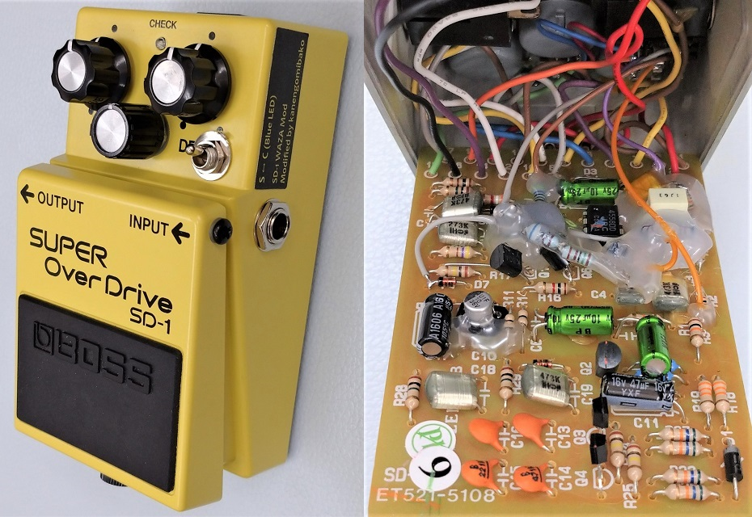
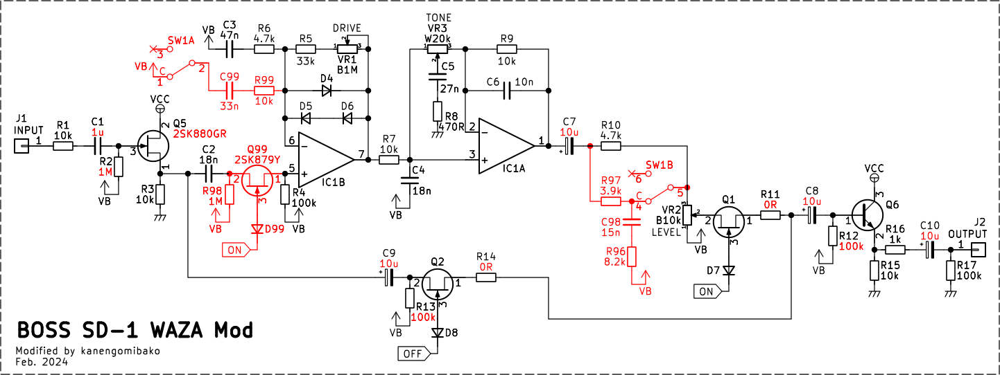
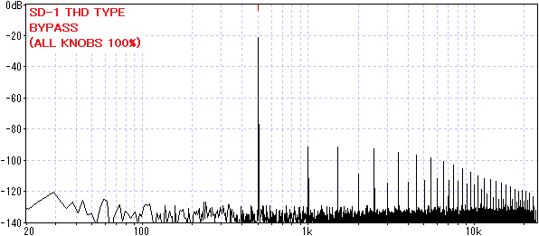
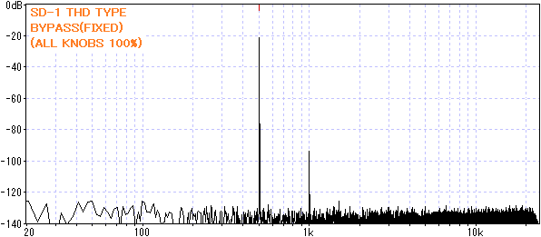
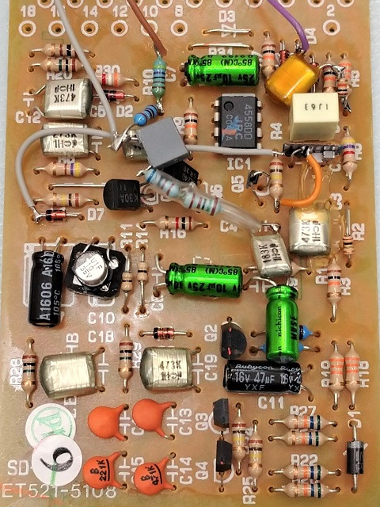
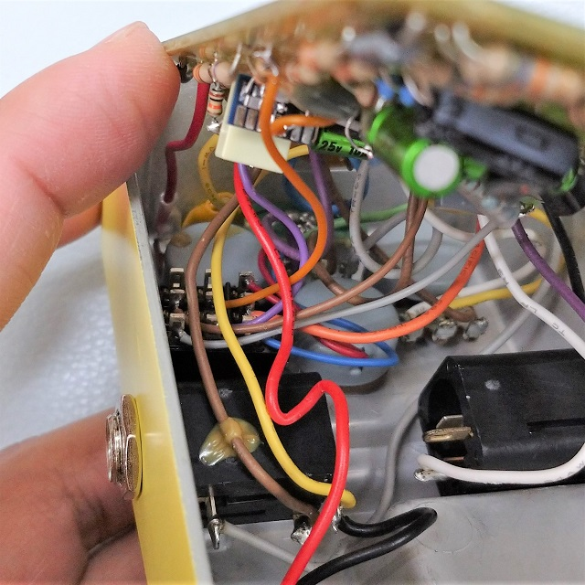
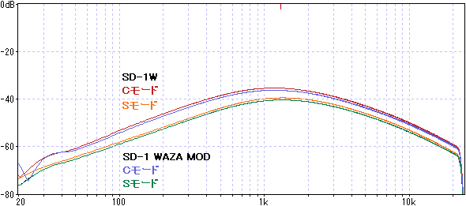

BOSS SD-1 WAZA Mod
2024年02月27日 カテゴリー：修理・改造・解析

BOSS SD-1Wの解析により、WAZA CRAFTでのカスタムモードの内容が明らかになりました。これを参考に、スルーホール部品版SD-1をSD-1W風にモディファイしてみました。やってみたいと思われる方は他にいないかもしれませんが、勝手に「WAZA Mod」と呼ぶことにします。（BD-2のWAZA Modはこちらのページへ）
値を変更したり部品を追加したりした部分を下図の赤字で示しています。

JFET（Q5、Q99）は基本的に何を使っても問題なさそうですが、現行品のスルーホール部品なら2SK2881が低雑音・低オン抵抗でよさそうです。
【Bleed Fix】
スルーホール版SD-1では、DRIVEを上げている状態だとバイパス音に歪み音がわずかに混ざることが知られています。
・参考ページ→The Boss SD-1 Super Overdrive bleed issue
この問題を解決するために、SD-1Wに倣ってオペアンプの入力前にFETスイッチを追加しました（R98、Q99、D99追加）。500Hzの正弦波を入力し、効果を確認しました。

歪み音が混ざっていた影響による倍音成分がありましたが、それがなくなったのがわかります。※1kHzは入力バッファでの歪み
【入力バッファ・ハイパスフィルタ等の変更】
・C1: 47nF → 1μF
・R2: 470kΩ → 1MΩ
・Q5: 2SC2240-GR → 2SK880-GR
・C8, C9: 47nF → 10uF
・R12, R13: 1MΩ → 100kΩ
・C7: 1μF → 10μF
・R11, R14: 22kΩ → 0Ω
【S←→C切替】
R99、C99、R96、R97、C98を追加し、SD-1Wのカスタム・モードへDPDTのスイッチで切り替えできるようにします。R96、R97、C98では高音域を落とすことにより、カスタム・モードで後段に追加された増幅部の周波数特性を再現しています。
下写真がモディファイ後の基板です。電源部の電解コンデンサC11、C17もついでに新品に交換してあります。10μFの電解コンデンサは手持ちの関係で無極性のものが使ってありますが、特別な意図はありません。

部品、配線材が動きやすい所は後でホットボンドで覆いました。
DRIVEポットの向きを変えると、スイッチを入れるスペースができます。ポットの端子がケースに接触しそうになるので、熱収縮チューブ等で対策しておきます。

たまたま3PDTのトグルスイッチを持っていたので、モードでLEDインジケータの色も変わるようにしました。
実測した周波数特性は下図です（DRIVE 0% TONE 100% LEVEL 100%）。

音量は少し違っていますが、かなり近い周波数特性の形を得ることができました。